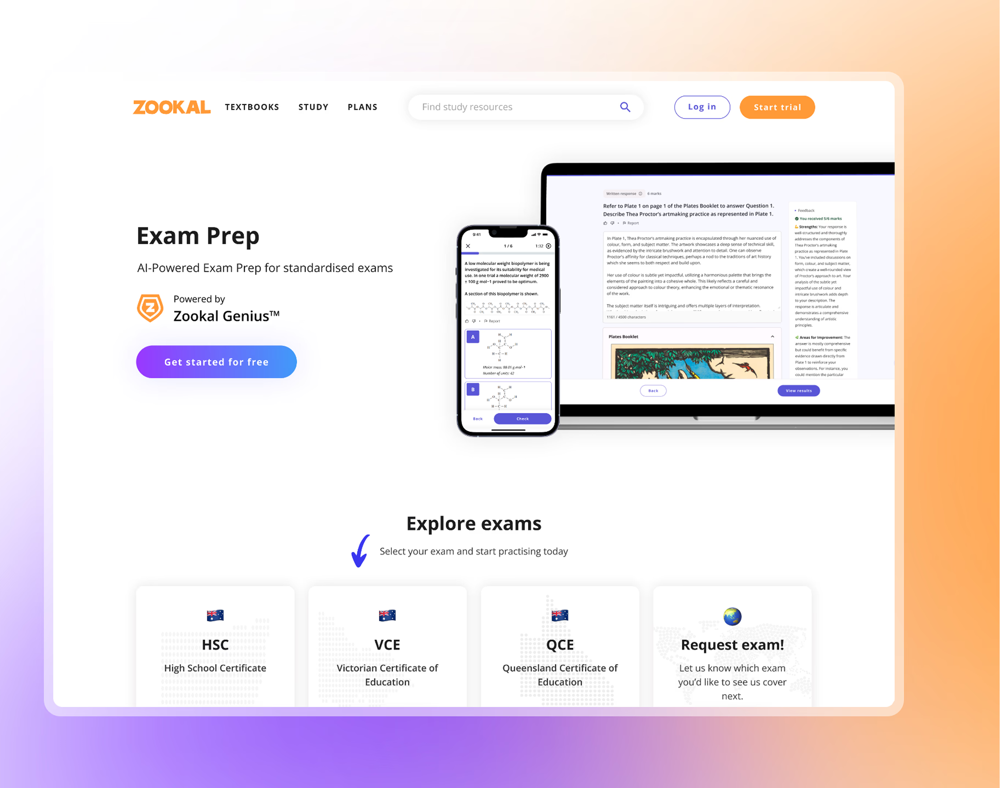

Designing an AI‑first exam prep platform for HSC and VCE students
Zookal is an ed-tech start-up based in Australia. Our mission is to empower every student with easy and affordable access to the right tools to learn faster, with confidence, wherever they are.
SOLO-DESIGNER | SEP 2023 - NOV 2023
RoleProduct Designer
OwnershipSole designer across the 0→1 journey: competitor analysis, stakeholder alignment, product design and launch — with no PM in the room.
Team2x Engineers · 2x Product Scientists · 1x Product Manager · CEO
TimelineIdea → launch in under 2 months · 2 weeks of visual design · Shipped for HSC & VCE exam season.
01 · The setup
The hardest part wasn't the interface.
Most 0→1 stories get told as execution stories. Here's the problem, here's what I designed, here are the launch numbers. I want to tell this one a bit differently.
Almost every real decision on this project got made without the thing you'd normally want first. No market validation for this exact idea. No PM in the room during the week it mattered most. No internal precedent for an AI product at the company. And a board asking for more than engineering could realistically deliver in the time we had.
So this is really a story about how I made, and defended, product calls under that kind of uncertainty. And what I'd do differently if I ran it again.
Product judgment under ambiguity.
02 · Problem discovery
A business that needed a second act, and students stuck between thin free tools and $100-an-hour tutors.
The business problem first. Zookal had a real business built on textbooks, and we'd secured funding, but the tech downturn made it harder to raise more. Inside the company that meant three things were happening at once. Engagement and retention on the platform were low. We had the product "shell" but not enough content to fill it. And the board wanted something we could sell, soon.
Then the user problem. Past research and a proper look at our competitors pointed to a gap specific enough to actually build against. It wasn't "students need help studying," it was much narrower than that. HSC and VCE practice resources online had thin question banks, covered only a few subjects, and gave no real feedback.
I actually hit this wall myself testing NESA's own practice exams. I couldn't even save my progress. That frustration is basically where the value proposition came from.
And the market signal backed it up. HSC and VCE together are about 125,000 students a year, and private tutoring in Sydney runs $60 to $100+ an hour. Real demand for help, sitting right next to weak digital alternatives. That was the opening.
Here's where the ambiguity started. Our Head of Product went on leave right when we needed to align the CEO, product scientists and engineering on the value prop and positioning. So I stepped into that gap myself. I built the competitor analysis and presented it directly to the CEO, which meant I was effectively running the definition phase of a product nobody had officially told me I owned yet.
There was no playbook for "designer runs stakeholder alignment on an AI product nobody in the company had built before." I had to figure out what "good enough alignment" looked like on the fly, then stand behind it.
03 · The hypothesis
A pricing and access bet, more than a feature bet.
The bet was simple. Offer AI-driven exam practice with instant feedback for $20 a month, a fraction of $60+ an hour for private tutoring, and HSC and VCE students who can't access or afford tutoring will pick it up as a practice tool. It also gives Zookal a second reason for existing subscribers to upgrade.
That framing mattered later, because it meant the product's job was never to be comprehensive. It just had to be credible enough, fast enough and cheap enough to beat doing nothing, and beat paying for a tutor.
Every scoping decision after this got measured against that, not against "what would make this feature complete."
Credible enough, fast enough and cheap enough to beat doing nothing, and beat paying for a tutor.
04 · Scrappy validation
With under two months before exams, validation had to happen inside the build, not before it.
A feature page with a waitlist went live before the full product did. It was the smallest thing we could ship to find out if interest was real before we committed more engineering time, and it ended up doubling as our main acquisition surface.
I showed low-fidelity flows to stakeholders early, on purpose, before they were polished. That way I'd get the disagreement and pushback while it was still cheap to change things.
And we tested early designs directly with real HSC-adjacent students. One response has stuck with me ever since.
"I think this would be a very helpful and easy to use study tool for HSC students... I wish the free package could offer a little more, as many students do not have an income."
Ieve, recent HSC graduate
It confirmed the free-tier idea was landing before we even had any premium conversion data, and it pointed straight at a gap in the free tier that ended up shaping the free/premium split.
To be honest about what this wasn't, the waitlist and early testing ran alongside the build, not ahead of it. This was validation squeezed into a build we were already committed to, not validation that decided whether we should build at all in the first place. We just didn't have that runway this time.
05 · Scoping v1
Pressure from two directions. A board that wanted more, and a deadline that wasn't moving.
The board wanted more features to make the launch feel bigger. Engineering had a fixed deadline, the HSC start date, and it wasn't moving. Here's what I decided on, and stood behind.
Mobile practice over desktop polish, for one. Research told us students study on desktop but practise on mobile, on the go, in between everything else. Since "practise anywhere, get instant feedback" was the actual promise, not "study anywhere," I put the mobile practice experience first and treated desktop as secondary instead of splitting effort evenly.
A free tier you could actually feel, not a locked demo, was the other. Instead of gating everything behind a paywall, I designed the free and premium split so free users could genuinely experience the product's value. That came straight from the student feedback. A thin free tier would lose exactly the students who couldn't afford tutoring in the first place, which would have undercut the entire point of the product.
There was a third piece too, negotiating scope with the board using what engineering could actually deliver, not just my opinion. I sat down with the engineers to understand what was realistic in the time we had, then brought that back to the board as the basis for what we'd ship. I didn't quietly overpromise to keep everyone happy, and I didn't cut scope on my own without buy-in either.
That negotiation doesn't usually show up in a case study, but it was one of the most important decisions I made on this project. It's the difference between executing a brief and actually shaping what the business could realistically commit to.
We didn't launch a finished product. We launched one that was scoped tightly enough to hold up against the hypothesis, and that we could actually ship in the time we had. That was the constraint that mattered most.
06 · The results
10,955 students in the first five weeks.
We launched in time for HSC and VCE season, against a total addressable market of around 127,000 students (77K HSC plus 50K VCE).
In the first 5 weeks
10,955students on the platform
47.3%free-trial to paid conversion
95%of new trial users returned 7+ days after their first visit
Behind the headline numbers, there's more detail. 1,117 engaged users, about 10% of signups. 146 subscriptions created at a 14.0% conversion rate. And 69 of those came from free trial users converting to paid.
For a product that went from an unnamed idea to launch in under two months, with only two weeks for the actual visual design, those are solid numbers. The trial-to-paid conversion especially tells me the core promise, instant feedback and affordable practice, actually held up once students got their hands on it.
07 · What I learned
The biggest lesson wasn't a feature I missed. It was about timing validation properly, instead of just hitting a launch date.
HSC and VCE students usually start preparing up to a year ahead. We had a two-month build window because that's when the board made the call, not because that's when the market was actually ready for us.
If I ran this again with the same ambiguity, I'd push harder, earlier, to separate validation from the launch deadline. Even a scrappy four-week head start on the waitlist and low-fidelity testing would have given us real behavioural data before the biggest decisions got locked in.
With more time, there are three things I would have prioritised on the product itself. Gamification modelled on what actually makes Duolingo's retention loop work, a real structural mechanism rather than decoration. Email marketing and in-app notifications to bring back the 90% of signups who never became active users, still the biggest single gap in our funnel. And product animations to carry the Zookie and astronaut brand identity we built for launch. It landed well outside the product (we ended up on 7NEWS) but never got used enough inside it.
I'm no longer with the Zookal team, though from what I understand, the product kept iterating under the team after I left.
If you're making product calls under ambiguity and want a designer who'll own them, let's chat on LinkedIn or email me at jxcquie@gmail.com.